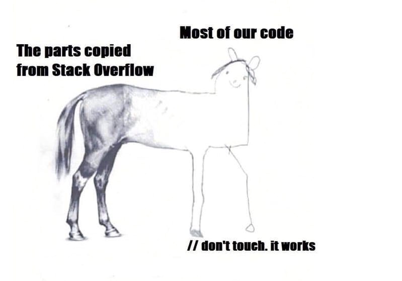

Système Information
description
Le système d'information (SI) est un ensemble organisé de ressources qui permet de collecter, stocker, traiter et distribuer de l'information1, en général grâce à un réseau d'ordinateurs. Il s'agit d'un système socio-technique composé de deux sous-systèmes, l'un social et l'autre technique. Le sous-système social est composé de la structure organisationnelle et des personnes liées au SI. Le sous-système technique est composé des technologies (hardware, software et équipements de télécommunication) et des processus d'affaires concernés par le SI2.
enjeux du système d'information
Le système d'information est le véhicule des entités de l'organisation. Sa structure est constituée de l'ensemble des ressources (le personnel, le matériel, les logiciels, les procédures) organisées pour : collecter, stocker, traiter et communiquer les informations. Le système d'information coordonne, grâce à la structuration des échanges, les activités de l'organisation et lui permet ainsi, d'atteindre ses objectifs.
